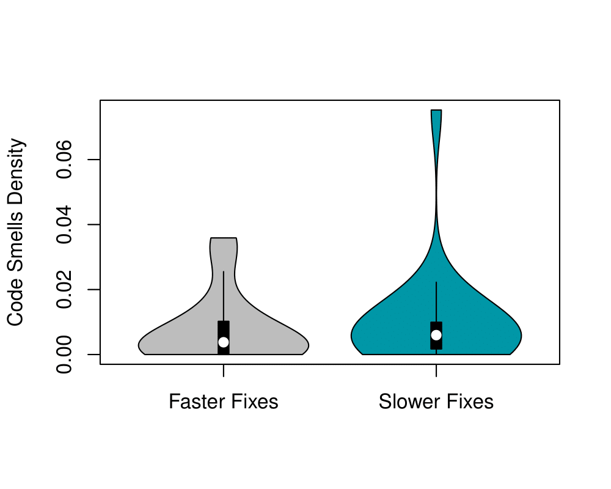

Datasets
For replication purpose, we publicize our datasets to the interested reader.
In the dataset of RQ1, we provide the values of the metrics bugs,
code smells, duplicated lines, and technical debts for a total of
144 versions of 75 relevant open-source projects.
The metrics were collected from the SonarQube platform, which is a widely used platform for continuous inspection of code quality.
* The first 48 versions represent the versions before the adoption of Travis CI.
* The next 48 versions (from 49 to 96) represent the versions of the first year after the adoption of Travis CI ("early CI").
* The last 48 versions (from 97 to 144) represent the versions of the third year after the adoption of Travis CI ("late CI").
The table below detail the meta-data that we fetch for all 144 versions of the 75 projects investigated in RQ1.
| # | Variable | Definition |
| 1 | Version | The software version number for which the metric was calculated. |
| 2 | Metric | The specific metric calculated for the software version. This dataset presents data for five metrics (bugs, code_smells, duplicated_lines, code_smells, sqale_debt_ratio, and nloc). |
| 3 | Date | The date when the metric was collected in SonarQube. |
| 4 | Value | The value of the metric for the specific software version. |
| 5 | normalized_value | The value of the metric normalized by the nloc. |
| 6 | project_name | The name of the project for which the metric was calculated. |
Use the link below to download the dataset and their respective meta-data in a format of a CSV document.
The dataset of RQ2 is composed of data of 97 open-source projects from GitHub.
For each project, we provide the values for metrics related to CI sub-practices, such as
Build Duration (sec.), Time to Fix broken builds, Test Coverage (%), and CI build activity.
Furthermore, our dataset also has the values of the metrics related
to continuous code quality, such as bugs, code smells,
duplicated lines, and technical debts for such projects.
The metrics Build Duration (sec.), Time to Fix broken builds, and CI build activity were collected from Travis CI API, while the Test Coverage (%), bugs, code smells, duplicated lines, and technical debts were collected from SonarQube API.
Use the link below to download the dataset and their respective meta-data in a format of a CSV document.
Projects Information (RQ1)
The table below shows the list of the projects analyzed in RQ1.
| # | Project | CI adoption date | Main language |
|---|---|---|---|
| 1 | aframevr/aframe | 2016-01-13 | JavaScript |
| 2 | alohaeditor/Aloha-Editor | 2014-03-21 | JavaScript |
| 3 | AnalyticalGraphicsInc/cesium | 2013-07-01 | JavaScript |
| 4 | androidannotations/androidannotations | 2014-06-07 | Java |
| 5 | andypetrella/spark-notebook | 2015-12-04 | JavaScript |
| 6 | ansible/ansible | 2015-03-10 | Python |
| 7 | apache/incubator-airflow | 2015-10-14 | Python |
| 8 | apereo/cas | 2013-09-16 | Java |
| 9 | appcelerator/titanium_mobile | 2014-12-18 | JavaScript |
| 10 | BabylonJS/Babylon.js | 2015-05-08 | JavaScript |
| 11 | bcit-ci/CodeIgniter | 2012-03-10 | PHP |
| 12 | bokeh/bokeh | 2014-04-07 | Python |
| 13 | boto/boto | 2012-07-10 | Python |
| 14 | buildbot/buildbot | 2013-08-27 | Python |
| 15 | bundler/bundler | 2013-05-23 | Ruby |
| 16 | cakephp/cakephp | 2012-05-13 | PHP |
| 17 | callemall/material-ui | 2015-06-28 | JavaScript |
| 18 | craftyjs/Crafty | 2014-01-29 | JavaScript |
| 19 | cython/cython | 2012-12-21 | Python |
| 20 | divio/django-cms | 2012-06-08 | Python |
| 21 | dropwizard/dropwizard | 2013-04-05 | Java |
| 22 | dropwizard/metrics | 2013-04-05 | Java |
| 23 | elastic/kibana | 2014-10-14 | JavaScript |
| 24 | elastic/logstash | 2013-09-18 | Ruby |
| 25 | ether/etherpad-lite | 2012-11-14 | JavaScript |
| 26 | fchollet/keras | 2015-09-07 | Python |
| 27 | fog/fog | 2012-08-16 | Ruby |
| 28 | frappe/erpnext | 2013-12-26 | Python |
| 29 | getsentry/sentry | 2012-08-11 | Python |
| 30 | gollum/gollum | 2013-03-15 | JavaScript |
| 31 | HabitRPG/habitica | 2013-11-04 | JavaScript |
| 32 | hapijs/hapi | 2013-03-05 | JavaScript |
| 33 | haraka/Haraka | 2014-03-25 | JavaScript |
| 34 | invoiceninja/invoiceninja | 2016-02-17 | JavaScript |
| 35 | ipython/ipython | 2012-06-24 | Python |
| 36 | isagalaev/highlight.js | 2014-08-13 | JavaScript |
| 37 | jashkenas/backbone | 2012-11-28 | JavaScript |
| 38 | jashkenas/underscore | 2012-12-28 | JavaScript |
| 39 | jsbin/jsbin | 2014-01-07 | JavaScript |
| 40 | kivy/kivy | 2012-10-18 | Python |
| 41 | laravel/laravel | 2012-09-02 | PHP |
| 42 | Leaflet/Leaflet | 2013-02-01 | JavaScript |
| 43 | loomio/loomio | 2013-03-19 | Ruby |
| 44 | mantl/mantl | 2016-02-02 | Python |
| 45 | matplotlib/matplotlib | 2012-08-29 | Python |
| 46 | mizzy/serverspec | 2013-06-30 | Ruby |
| 47 | mozilla/pdf.js | 2013-02-01 | JavaScript |
| 48 | Netflix/Hystrix | 2014-09-02 | Java |
| 49 | openhab/openhab | 2015-05-21 | Java |
| 50 | owncloud/core | 2014-05-23 | PHP |
| 51 | photonstorm/phaser | 2014-04-01 | JavaScript |
| 52 | processing/p5.js | 2015-01-26 | JavaScript |
| 53 | puppetlabs/puppet | 2012-02-17 | Ruby |
| 54 | Pylons/pyramid | 2012-06-24 | Python |
| 55 | rails/rails | 2011-07-21 | Ruby |
| 56 | ReactiveX/RxJava | 2014-08-29 | Java |
| 57 | refinery/refinerycms | 2012-09-05 | Ruby |
| 58 | request/request | 2013-10-15 | JavaScript |
| 59 | robolectric/robolectric | 2013-05-09 | Java |
| 60 | roots/sage | 2014-12-28 | PHP |
| 61 | saltstack/salt | 2012-04-10 | Python |
| 62 | scikit-image/scikit-image | 2012-10-04 | Python |
| 63 | scikit-learn/scikit-learn | 2012-11-23 | Python |
| 64 | scipy/scipy | 2013-05-25 | Python |
| 65 | serverless/serverless | 2016-04-20 | JavaScript |
| 66 | siacs/Conversations | 2015-01-04 | Java |
| 67 | square/picasso | 2014-01-11 | Java |
| 68 | sympy/sympy | 2012-06-21 | Python |
| 69 | TelescopeJS/Telescope | 2015-01-19 | JavaScript |
| 70 | Theano/Theano | 2012-08-02 | Python |
| 71 | twbs/bootstrap | 2012-04-20 | JavaScript |
| 72 | vanilla/vanilla | 2014-07-22 | PHP |
| 73 | woocommerce/woocommerce | 2014-09-02 | PHP |
| 74 | Yelp/mrjob | 2013-01-17 | Python |
| 75 | zurb/foundation-sites | 2013-11-07 | JavaScript |
RQ1 - Violin Plots
In the following, we show the violin plots for each Quality Inspection metric analyzed in RQ1. First, we show the comparison between the before-Travis CI vs after-Travis CI periods, with respect to the Quality Inspection metrics. Then, we show the comparison with respect to the early-Travis CI and late-Travis CI periods.
Before Travis CI vs After Travis CI periods
Early CI vs Late CI periods
RQ2 - Violin Plots
In the following, we show the violin plots for each Quality Inspection metric analyzed in RQ2, with respect to the degree of adoption of the investigated CI practices.
CI Metric: Build Activity Ratio
CI Metric: Required Time to Fix a Build

CI Metric: Build Duration
CI Metric: Test Coverage
Projects Information (RQ2)
The table below shows the list of the projects analyzed in RQ2.
| # | project |
| 1 | OuiSouss/blackhole |
| 2 | LibraryOfCongress/concordia |
| 3 | ressec/hemajoo-foundation |
| 4 | apache/incubator-tamaya |
| 5 | Mastercard/oauth1-signer-php |
| 6 | dsaltares/musicplayer-ui |
| 7 | SonarSource/sonarqube |
| 8 | Mastercard/client-encryption-python |
| 9 | Mastercard/client-encryption-nodejs |
| 10 | Mastercard/oauth1-signer-ruby |
| 11 | Mastercard/oauth1-signer-csharp |
| 12 | utPLSQL/utPLSQL-demo-project |
| 13 | nabu-3/minimal-class |
| 14 | deeplyocean/oceans |
| 15 | Mastercard/oauth1-signer-nodejs |
| 16 | dsaltares/gtd-app |
| 17 | webauthn4j/webauthn4j |
| 18 | ChilliCream/HotChocolate |
| 19 | accet9397/accet-ui |
| 20 | alfio-event/alf.io |
| 21 | WojciechZankowski/iextrading4j-book |
| 22 | romanutti/gephi-plugins |
| 23 | Mastercard/oauth1-signer-swift |
| 24 | Mastercard/oauth1-signer-java |
| 25 | hmcts/ccd-user-profile-api |
| 26 | dsaltares/musicplayer-server |
| 27 | WojciechZankowski/iextrading4j |
| 28 | jinahya/jsonrpc-bind |
| 29 | notification-system/nosy-admin |
| 30 | newtonjose/cs-2019-01 |
| 31 | dwenzel/t3events |
| 32 | exasol/virtual-schema-common-java |
| 33 | eskaton/asn4j |
| 34 | VocabHunter/vocabhunter |
| 35 | lheydel/manguru-back |
| 36 | KengoTODA/guava-helper-for-java-8 |
| 37 | CJSCommonPlatform/json-schema-catalog |
| 38 | CJSCommonPlatform/generator-maven-plugin |
| 39 | CJSCommonPlatform/framework-api |
| 40 | pavru/lomout |
| 41 | sflpro/notifier |
| 42 | kreait/firebase-php |
| 43 | mivek/metarParser |
| 44 | dernasherbrezon/r2cloud |
| 45 | miw-upm/betca-tpv-spring |
| 46 | revaturelabs/caliber-2-category-service |
| 47 | iomega/paired-data-form |
| 48 | KengoTODA/javadocky |
| 49 | metamug/mason |
| 50 | CJSCommonPlatform/artemis-manager |
| 51 | wz2cool/mybatis-dynamic-query |
| 52 | hmcts/feature-toggle-api |
| 53 | tsantos84/serializer |
| 54 | c2v4/greenery |
| 55 | imageworks/OpenColorIO |
| 56 | Diplomatiq/crypto-random |
| 57 | indigo-iam/iam |
| 58 | chaturanga50/opsworks-cli |
| 59 | enriqzAlejandro/ludis-backend |
| 60 | yourtion/node-erest |
| 61 | gruelbox/dropwizard-https-redirect |
| 62 | phantauth/phantauth-service |
| 63 | max-cong/medis |
| 64 | sonar-perl/sonar-perl |
| 65 | samueldple/datetimekt |
| 66 | nut-tree/nut.js |
| 67 | Raffaello/board-m-n-k |
| 68 | bazo-blockchain/bazo-vm |
| 69 | rmaqueda/OpenWeather |
| 70 | Jakeeyturner/blockchain-vscode-extension |
| 71 | TransbankDevelopers/transbank-sdk-python |
| 72 | jsulpis/java-study |
| 73 | svstoll/cscc-recommender |
| 74 | famaridon/redmine-ng-api |
| 75 | Unidata/rosetta |
| 76 | jinahya/jinahya-springframework |
| 77 | vierbergenlars/plugin-updates-gradle-plugin |
| 78 | ddaninthe/botgether |
| 79 | camel-tooling/camel-lsp-client-eclipse |
| 80 | svishnevsky/OpenPDF |
| 81 | gdnsd/gdnsd |
| 82 | galasam/GalaBank |
| 83 | CJSCommonPlatform/framework-domain |
| 84 | han-feng/cvicse-boot |
| 85 | holgern/beem |
| 86 | Gimpneek/snapdex |
| 87 | DaJaime/optidb-server |
| 88 | ChaudhryHaseeb/optidb-client |
| 89 | GOBDS/mapfood |
| 90 | ioet/bpm-people-api |
| 91 | adilsonsilva/autenticacao |
| 92 | try0/wicket-toastr |
| 93 | coffeenet/coffeenet-starter |
| 94 | nefarioustim/cerberus-auth |
| 95 | rfaguiar/livraria-frontend-reactjs |
| 96 | symonk/sylenium |
| 97 | thailekha/dynamic-dockerizer-agent |